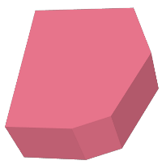

Name
ST_3DIntersection — 3次元のインタセクトした (共有する)部分を計算します。
Synopsis
geometry ST_3DIntersection(geometry geom1, geometry geom2);
説明
geom1とgeom2の間で共有される部分のジオメトリを返します。
Availability: 2.1.0
 This method needs SFCGAL backend.
This method needs SFCGAL backend.
This method implements the SQL/MM specification. SQL-MM IEC 13249-3: 5.1
This function supports 3d and will not drop the z-index.
This function supports Polyhedral surfaces.
This function supports Triangles and Triangulated Irregular Network Surfaces (TIN).
例
PostGIS関数ST_AsX3Dを使って3次元イメージを生成し、X3Dom HTML Javascript redering libraryを使ってHTMLでの描画を行います。
SELECT ST_Extrude(ST_Buffer(ST_GeomFromText('POINT(100 90)'),
50, 'quad_segs=2'),0,0,30) AS geom1,
ST_Extrude(ST_Buffer(ST_GeomFromText('POINT(80 80)'),
50, 'quad_segs=1'),0,0,30) AS geom2;
 元の3次元ジオメトリを重ねたものでgeom2は半透明で表示 |
SELECT ST_3DIntersection(geom1,geom2)
FROM ( SELECT ST_Extrude(ST_Buffer(ST_GeomFromText('POINT(100 90)'),
50, 'quad_segs=2'),0,0,30) AS geom1,
ST_Extrude(ST_Buffer(ST_GeomFromText('POINT(80 80)'),
50, 'quad_segs=1'),0,0,30) AS geom2 ) As t;
 geom1とgeom2の共有部分 |
3次元ラインストリングとポリゴン
SELECT ST_AsText(ST_3DIntersection(linestring, polygon)) As wkt
FROM ST_GeomFromText('LINESTRING Z (2 2 6,1.5 1.5 7,1 1 8,0.5 0.5 8,0 0 10)') AS linestring
CROSS JOIN ST_GeomFromText('POLYGON((0 0 8, 0 1 8, 1 1 8, 1 0 8, 0 0 8))') AS polygon;
wkt
--------------------------------
LINESTRING Z (1 1 8,0.5 0.5 8)
立方体 (閉じた多面体サーフェス)と3次元ポリゴン
SELECT ST_AsText(ST_3DIntersection(
ST_GeomFromText('POLYHEDRALSURFACE Z( ((0 0 0, 0 0 1, 0 1 1, 0 1 0, 0 0 0)),
((0 0 0, 0 1 0, 1 1 0, 1 0 0, 0 0 0)), ((0 0 0, 1 0 0, 1 0 1, 0 0 1, 0 0 0)),
((1 1 0, 1 1 1, 1 0 1, 1 0 0, 1 1 0)),
((0 1 0, 0 1 1, 1 1 1, 1 1 0, 0 1 0)), ((0 0 1, 1 0 1, 1 1 1, 0 1 1, 0 0 1)) )'),
'POLYGON Z ((0 0 0, 0 0 0.5, 0 0.5 0.5, 0 0.5 0, 0 0 0))'::geometry))TIN Z (((0 0 0,0 0 0.5,0 0.5 0.5,0 0 0)),((0 0.5 0,0 0 0,0 0.5 0.5,0 0.5 0)))
二つの立体の共通部分もまた立体です (ST_Dimensionで3を返します)
SELECT ST_AsText(ST_3DIntersection( ST_Extrude(ST_Buffer('POINT(10 20)'::geometry,10,1),0,0,30),
ST_Extrude(ST_Buffer('POINT(10 20)'::geometry,10,1),2,0,10) ));POLYHEDRALSURFACE Z (((13.3333333333333 13.3333333333333 10,20 20 0,20 20 10,13.3333333333333 13.3333333333333 10)),
((20 20 10,16.6666666666667 23.3333333333333 10,13.3333333333333 13.3333333333333 10,20 20 10)),
((20 20 0,16.6666666666667 23.3333333333333 10,20 20 10,20 20 0)),
((13.3333333333333 13.3333333333333 10,10 10 0,20 20 0,13.3333333333333 13.3333333333333 10)),
((16.6666666666667 23.3333333333333 10,12 28 10,13.3333333333333 13.3333333333333 10,16.6666666666667 23.3333333333333 10)),
((20 20 0,9.99999999999995 30 0,16.6666666666667 23.3333333333333 10,20 20 0)),
((10 10 0,9.99999999999995 30 0,20 20 0,10 10 0)),((13.3333333333333 13.3333333333333 10,12 12 10,10 10 0,13.3333333333333 13.3333333333333 10)),
((12 28 10,12 12 10,13.3333333333333 13.3333333333333 10,12 28 10)),
((16.6666666666667 23.3333333333333 10,9.99999999999995 30 0,12 28 10,16.6666666666667 23.3333333333333 10)),
((10 10 0,0 20 0,9.99999999999995 30 0,10 10 0)),
((12 12 10,11 11 10,10 10 0,12 12 10)),((12 28 10,11 11 10,12 12 10,12 28 10)),
((9.99999999999995 30 0,11 29 10,12 28 10,9.99999999999995 30 0)),((0 20 0,2 20 10,9.99999999999995 30 0,0 20 0)),
((10 10 0,2 20 10,0 20 0,10 10 0)),((11 11 10,2 20 10,10 10 0,11 11 10)),((12 28 10,11 29 10,11 11 10,12 28 10)),
((9.99999999999995 30 0,2 20 10,11 29 10,9.99999999999995 30 0)),((11 11 10,11 29 10,2 20 10,11 11 10)))